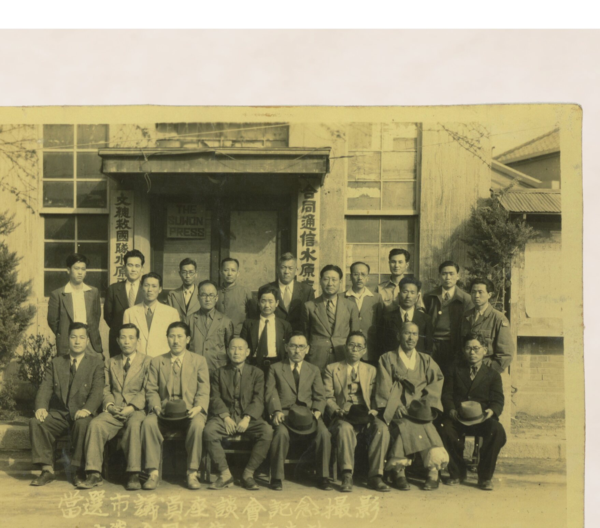
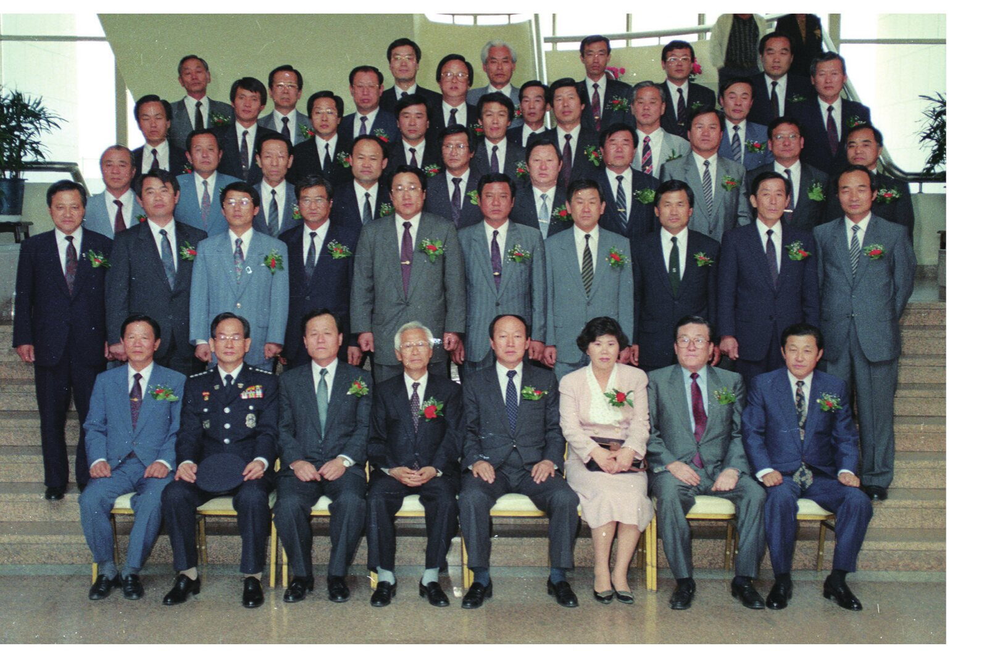
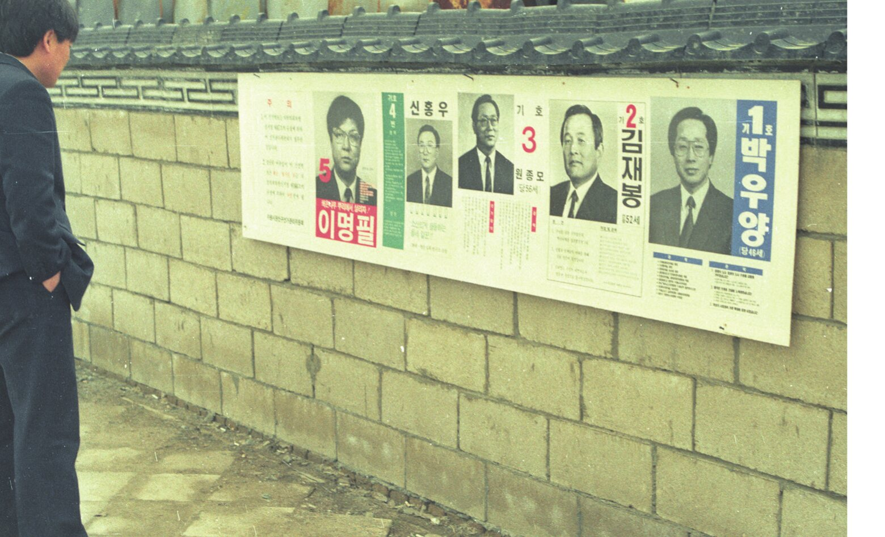

다시 열린 문
수원의 지방의회는 두 번 시작되었습니다. 1952년 처음 문을 열었고, 1961년 닫혔다가, 30년이 지난 1991년에 다시 열렸습니다. 그 문을 드나든 사람들은 누구였을까요.
스스로 다스린다는 것
자치는 다스리는 사람과 다스림을 받는 사람이 같은 상태를 말합니다. 고대 아테네는 지도자를 투표가 아니라 추첨으로 뽑았고, 공동체를 위협할 만큼 힘이 커진 사람은 투표로 추방했습니다. 구성원 사이의 평등을 지키기 위해서였습니다.
근대의 대의제는 선거로 '더 나은' 대표를 고르는 방식을 택했습니다. 그리고 국가가 커지고 중앙집권이 강해질수록, 지방이 스스로를 다스릴 여지는 점점 줄어들었습니다. 이 전시는 수원이라는 한 도시에서 그 여지가 어떻게 열리고 닫혔는지를 따라갑니다.
제한선거의 시대
1917년 지정면이 된 수원면에 면협의회가 설치되었고, 1920년부터 협의회원을 선거로 뽑았습니다. 하지만 투표권은 일정액 이상 세금을 낸 사람에게만 있었습니다. 의원들은 자연히 자산가층에서 나왔고, 의회는 자문기구에 머물렀습니다.
첫 번째 문
1952년, 전쟁 중에 첫 수원시의회가 구성되었습니다. 초대 의원 20명 가운데 14명이 직업을 농업으로 적었지만 실제로 농사를 짓는 사람은 많지 않았습니다. 가장 흔한 경력은 동사무소 같은 행정기관 근무, 그리고 해방 공간의 우익 청년단 활동이었습니다.
의원 대부분은 40대였고, 한 명을 제외하면 모두 수원 토박이였습니다. 식민지 시기 근대 공교육을 받기 시작한 첫 세대이기도 했습니다.

“1950년대는 한국 근현대사를 통틀어 가장 균질적이고 평준화된 시대였다”

1956년, 수원시의회는 지방자치제 실시 4주년을 기념해 공설운동장에서 종합운동경기대회를 열었습니다. 지방자치는 아직 낯선 제도였지만, 도시는 그것을 축제로 기념했습니다.
제2대 의회에서는 공공기관 경력자가 15명 중 10명으로 늘었고, 북한 출신 의원도 처음 나왔습니다. 전쟁으로 인한 인구 이동이 의회에도 흔적을 남긴 것입니다.
닫힌 30년
1961년 5·16 군사정변 이후 지방의회는 해산되었습니다. 그 뒤 30년 동안 수원의 정치는 중앙 정치무대의 지방판이었습니다. 대통령 선거와 국회의원 선거가 정치의 전부였고, 전국 정당의 이슈가 위에서 지역으로 내려왔습니다.
그사이 도시는 완전히 달라졌습니다. 산업화와 이촌향도로 10만 명이 채 안 되던 인구가 60만 명을 넘었고, 충청·영남·호남에서 온 이주민이 수원 사람의 절반을 넘게 되었습니다.
대수별 수원시의원 정원 (명)
정원은 제1대 20명, 제2대와 제3대 15명이었고, 30년 공백 뒤 제4대 46명, 제5대 51명, 제6대 34명, 제7대 40명, 제8대 37명, 제9대와 제10대 34명이었다.
두 번째 문
1991년 지방자치제가 부활하면서 수원시의회가 다시 구성되었습니다. 중앙 정당의 과도한 영향을 막기 위해 처음에는 기초의원의 정당 추천을 금지했습니다. 의원 한 사람 한 사람이 독립된 정치 주체가 된 것입니다.
이 제도는 지역 안의 문제에 집중하게 했지만, 동네 간 갈등과 이권 경쟁이 불거지기도 했습니다. 결국 2010년부터 시의원에도 정당 공천제가 시행됩니다.



지역 토호의 자리에서 풀뿌리 민주주의의 전당으로
지방의회를 향한 평가는 극과 극을 오갑니다. 그러나 누가 의원이 되었는지를 따라가면, 수원이라는 도시가 어떻게 바뀌어 왔는지가 보입니다. 더 많은 자료는 컬렉션에서 이어집니다.
컬렉션 전체 보기 →